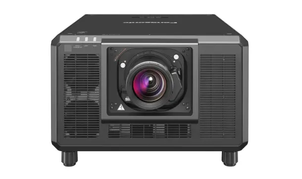

Проекторы для больших помещений
Серия профессиональных проекторов, предназначенная для крупных концертных площадок, музеев и кинотеатров. Особенность проекторов этой серии – увеличенный запас мощности яркости проектора и более широкие возможности настройки изображения. Проекторы отличаются неприхотливостью в обслуживании благодаря современной системе защиты от пыли и эффективному жидкостному охлаждению, и способны работать без перегрева много часов подряд. Мощный видеопроцессор мгновенно обрабатывает каждую деталь изображения, обеспечивая невероятную четкость картинки даже в динамичных сценах.